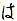
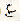
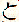

| Required Packages | |
| Package | Version |
| Perl | 5.004 _04 |
| libwww-perl | 5.14 |
| MIME-Base64 | 2.03 |
I like to learn new languages by plunging into a good book. For Italian it was Pinocchio, for English The Moon is a Harsh Mistress. I keep a dictionary handy, and I spend many hours rechecking words until I remember them. It's tedious, but in the end is still a more interesting way to learn than the usual route of beginning with very simple phrases and vocabulary and building up slowly, reading childish stories about uninteresting subjects.
I tried this with a book on Go strategy written in Japanese, and quickly hit a wall. With many languages you can infer the meaning of words by what they look like and remember them by how they sound. But in everyday Japanese text, there is no way for a beginner to know how a given phrase is pronounced until he learns the two thousand characters in common use. Furthermore, each character can usually be pronounced in two or more ways depending on the context (see: Japanese Charecters).
It might still be possible to learn Japanese with this method, but the task is complicated further still by the fact that the character dictionaries are not very quick to use - Japanese has 2000 characters, so you have to find the words graphically, which is much more time-consuming. You can't leaf through the dictionary as you can with western writing systems.
So I ended up auditing the Japanese course at the university where I work. Even though the teacher made the course as much fun as a language course can be, learning kanji was difficult because of the feeling of not seeing them in real, interesting contexts.
Eventually I found an invaluable resource for learning and using Japanese on the web, ftp://ftp.monash.edu.au/pub/nihongo. This site has two freely available dictionaries that convert Japanese to English: edict and kanjidic. There are also instructions on how to view and edit Japanese on various operating systems.
Listing 2: Displaying Kanji
There were a few Japanese web pages about Go, and I'd visited them several times, each time hoping that my proficiency had improved enough to let me read them. Each time I found that I didn't know enough, and so I came up with an idea: Why not simply look up the characters automatically?
The simplest design I could think of was a CGI script that fetches the page and inserts the definitions of the kanji. Now I can browse any web page I like, and the kanji are automatically translated to English. Perl and CPAN made this nearly as simple as it sounds. I called the result wwwkan.pl (see Listing 4).
The dictionaries are fairly large and it would take too long to load and parse them again whenever the script is called. There are several solutions. You could have a dictionary server that sits in memory all the time, responding to queries as they arrive, or you could store the dictionary in a hashed database. For simplicity I chose the latter. The script which converts the dictionary files into hash entries is shown in gendb.pl (see Listing 3).
The format of the edict dictionary is straightforward: first the kanji, then a space, and finally the definition. The loop to parse the file:
open DIC, "$dir/edict" or die "Can't open $dir/edict";
while (<DIC>) {
next if /^#/;
/^(\S+)\s/ or die("Invalid line '$_'");
$kanji{$1} .= $_;
}
close DIC;
The second dictionary file, kanjidic, is slightly more complicated, as there are several fields on each line explaining different aspects of the kanji in question:
Figure 1: The subject listing of the Japanese Yahoo web site.
(kanji) 3027 U6328 N1910 B64 S10 I3c7.14 L2248 P1-3-7 Wae Yai1 Yai2 Q5303.4 MN12082 MP5.0229 (hiragana/kata-kana readings) {push open}
The various numbers represent different ways of indexing the kanji, e.g. N1910 means that this kanji is number 1910 in Nelson's Modern Reader's Japanese-English Character Dictionary and Wae means that the romanized Korean reading of this kanji is 'ae'. However interesting this information might be, it clutters up our web page, so let's get rid of most of it:
s/\s[UNBSMHQLKIOWYXEPCZ][\w-.]*//g;
In the parsing loop, %kanji isn't just any hash. It's a tied hash:
tie %kanji, AnyDBM_File, 'kanji.dbmx',
O_CREAT | O_RDWR | O_TRUNC, 0755;
This ties %kanji to the file kanji.dbmx using AnyDBM_File, a handy module bundled with Perl that lets hashes stored on disk appear to be in memory. [Editor's note: Infobots and Purl (p. 10) does the same. -Jon]
Adding entries to the database is then as simple as saying:
$kanji{$1} .= $_;
This stores the entry in the file. I use the .= operator instead of = because there can be multiple entries for different meanings of characters or character sequences. After we are done with it, we untie %kanji to break the connection between the hash and the disk file.
The CGI script wwwkan.pl. uses two different libraries as its frontend and backend: libwww-perl (LWP, available on CPAN) is used to fetch the HTML document from the server and CGI.pm (provided with the latest Perl distribution) to parse the request from the HTTP daemon and create the HTML to be returned.
The script begins with
tie %kanji, AnyDBM_File, "$libdir/kanji.dbmx", O_RDONLY, 0;which opens the kanji database created by the other script - the contents of %kanji are read back from the file when requested.
Next we print the CGI header and a form for the new URL:
Figure 1: The same page viewed through wwwkan.pl.
print $query-<header,
"CONVERTED By TJL's kanji explainer on ", `date`,
'. Mail comments to lukka@fas.harvard.edu.<P>',
$query->startform(),
"<b>Go To:</b> ",
$query->textfield(-name => 'url',
-default => 'http://www.yahoo.co.jp/',
-size => 50),
$query->submit('Action', 'Doit'),
$query->endform,
"<HR>\n";
For more explanation of what is happening, Lincoln Stein's documentation in CGI.pm or any of his TPJ columns.
After printing the form, the script retrieves the web page:
$url = $query->param('url');
$doc = get $url;
Now we have the HTML code of the page that was specified in
the url field of the form in $doc.
The next task is to replace all the links to other HTML files with links through our engine.
$h = parse_html($doc);
$h->traverse(
sub {
my ($e, $start) = @_;
return 1 unless $start;
my $attr = $links{lc $e->tag} or return 1;
my $url = $e->attr($attr->[0]) or return 1;
$e->attr($attr->[0],
($attr->[1] ? getlink($url) : abslink($url)));
},
1);
See the HTML::Parse documentation for further details. The anonymous subroutine (sub { ... }) merely checks whether this tag has a URL field, using the hash that we initialized at the beginning of the program:
# 0 = absolute, 1 = relative
%links = ( a => ['href', 1],
img => ['src', 0],
form => ['action', 1],
link => ['href', 1],
frame => ['src', 1]);
The anonymous subroutine in the call to $h->traverse rewrites any URLs that appear on the page. URLs that are believed to contain text are rewritten with getlink() so that my translation engine filters them. URLs that represent images are replaced with absolute (prefaced with http://) links by the abslink() subroutine.
sub abslink {
return (new URI::URL($_[0]))->abs($url)->as_string;
}
sub getlink {
my $url_to = (new URI::URL($_[0]))->abs($url);
my $proxy_url = new URI::URL($my_url);
$proxy_url->query_form(url => $url_to->as_string);
return $proxy_url-<as_string;
}
After modifying the tags in the parsed form, this line retrieves the modified HTML:
$doc = $h->as_HTML;
Next, the climactic ending of the script:
for ( split "\n", $doc ) {
s/((?:[\x80-\xFF][\x40-\xFF])+)/explainstr($1)/ge;
print;
}
This converts the text into explained kanji one line at a time. The regular expression matches one or more Japanese char-acters: each is stored in two bytes with the highest bit in the first byte set. The /e modifier is used to replace them with the output of the explainstr() subroutine, which converts a string of kanji into an English explanation:
sub explainstr {
my $str = @_;
my $res = "";
my ($pos, $mlen, $s);
for ( $pos = 0; $pos < length($str); $pos += $mlen ) {
my $expl;
$mlen = 20;
while ( !defined($expl =
$kanji{$s=(substr(($str),$pos,$mlen))})
and $mlen > 2) {
$mlen -= 2;
}
$res .= $s;
if (defined $expl) {
$res .= " <small><[[[".($expl)."]]]></small> ";
}
}
return $res;
}
The inner loop is necessary because we wish to find the longest match available in the dictionary. (We want to translate "word processor", not the shorter matches "word" and "processor".)
This design is good if you don't know any Japanese, but once you've learned the basic characters (e.g. 'one', 'large'...), it gets tedious to see their definitions over and over again. We need a way to categorize the difficulty of characters, and luckily, the Japanese Ministry of Education has done most of our work for us. They have divided kanji into grades for school. The kanjidic file contains the grade number of each kanji, so we can include an option that disables translation below a particular grade. This can be achieved with the regex /G([0-9])/ in the explainstr loop and checking $1 to see whether we should explain this character.
Of course, different people have different interests. For exam-ple, I have learned several terms relating to Go but far fewer that relate to, say, art history. It would be nice to be able to provide a detailed list of what kanji I know. It is easy to envision CGI interfaces to a personalized database containing the kanji that you know, but let's KISS (Keep It Simple, Stupid) for now. The easiest solution is to write the numbers of the kanji I know into a file. As a bonus, I can use the same file to generate a selection of words from kanjidic and edict to use with the kdrill program to drill myself on the kanji I should know.
Also, some Japanese pages use an alternate encoding called Shift-JIS. To handle both encodings without degrading perfor-mance, I adapted the code used by the xjdic program (from the Monash archive) and made it into an XS module, available from my author directory in the CPAN.
Even though all these changes would be useful, they are fairly trivial so I shall not present the code here - by the time this issue goes to press I expect to have a module available at: http://www.perl.com/CPAN/modules/by-authors/Tuomas_J_Lukka.
This tool has proven itself quite useful - I am able to keep up my study of Japanese by reading interesting material. The effort that went into making these scripts was not large; only about 5 hours to get the most complicated (messy) version, and a few more to clean them up for TPJ.
There are several problems with this approach. The most serious is that images of characters cannot be translated - you have to resort to a traditional dictionary (I recommend xjdic from the Monash archive). Another problem is the fact that Japanese inflects verbs and has short particles all over the sentence (e.g. , the subject marker, , the object marker, , the word for 'with', and so on). Therefore, the displayed text given by wwwkan.pl. is sometimes spurious. A good rule of thumb is that all entries that are one or two hiragana characters should be viewed with suspicion.
As a teaser, I might mention that my study of Japanese is related to my work on a Go-playing program, which I'm writing mostly in Perl (PDL for the speed-critical parts - http://pdl.perl.org) for speed-critical parts) but that is a story for another time.
__END__
{kind=link}
{kind=link}